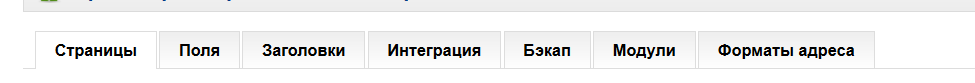
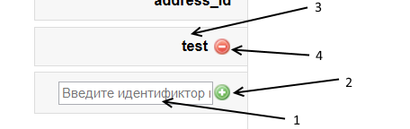
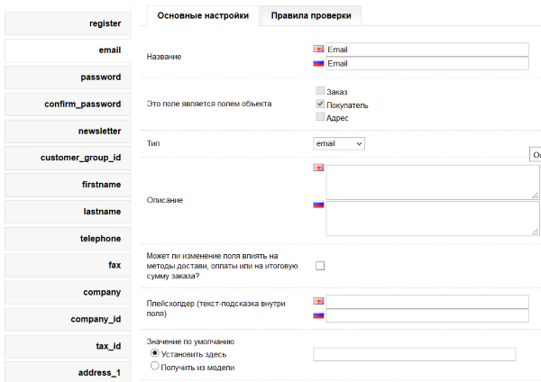
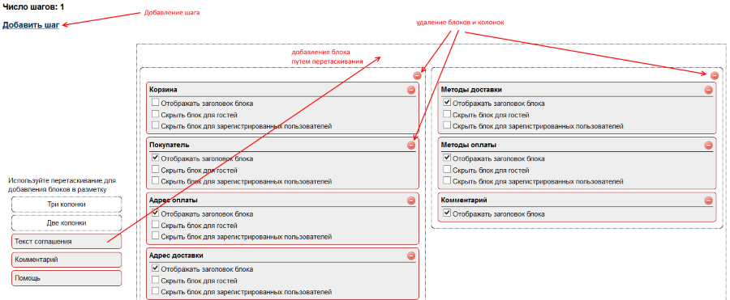
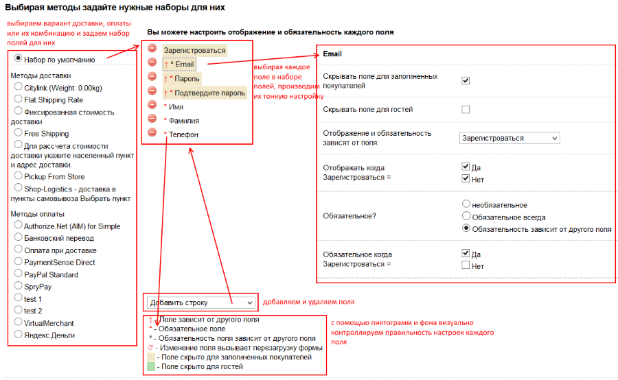
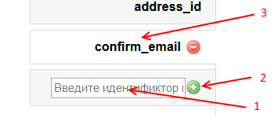
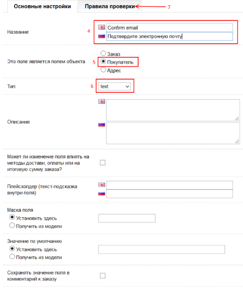
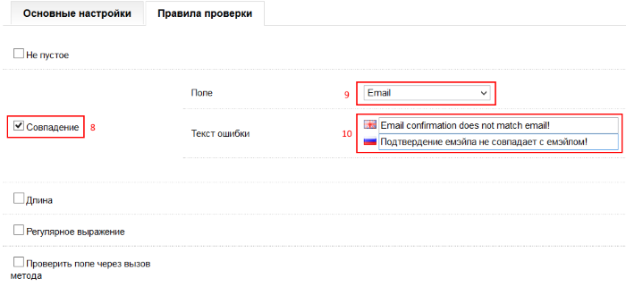
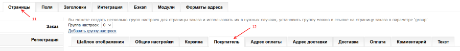
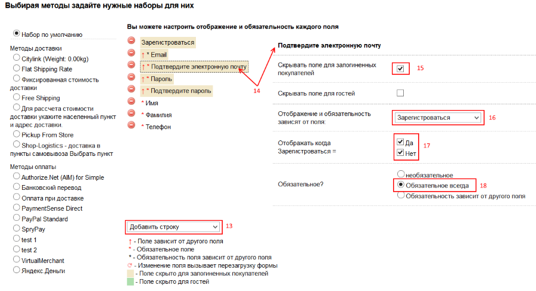

Основные сведения о модуле.
Модуль представляет собой 4 отдельные страницы:
1) Страница заказа
2) Страница регистрации
3) Страница редактирования аккаунта (основной информации в личном кабинете)
4) Страница редактирования адреса в личном кабинете (страница списка адресов - это страница опенкарта)
При этом модуль никак не влияет на точно такие же страницы самого опенкарта, они работают отдельно и могут быть открыты с использованием ссылок на них.
Основная идея модуля - настраиваемые поля и настраиваемые наборы полей у каждой страницы модуля, при этом страница заказа разбита на несколько блоков,
которые в свою очередь имеют свои наборы полей.
Все управление модулем происходит через его админ панель.
Основной подход к настройке модуля построен на детализации настройки:
Страница -> Блок -> Набор полей -> Тонкая настройка поля в указанном наборе <- Общие настройки полей
Соответственно, если вы задумались о настройке поля "регистрироваться при заказе", то вам нужно будет просмотреть два места:
1) Поля - поле "register"
2) Страницы - Заказ - Покупатель - Набор полей - Поле регистрироваться
Данная инструкция описывает настройки модуля от общих к более тонким. В конце дан пример добавления и настройки нового поля.
Общие настройки модуля
Общие настройки модуля - это настройки, которые влияют на все страницы модуля.
Они представлены рядом горизонтальных вкладок в верхней части админ панели:
1) Поля
2) Заголовки
3) Интеграция
4) Бэкап
5) Модули
6) Форматы адреса

Далее они будут рассмотрены по порядку
Общие настройки модуля: Поля
В модуле заранее настроены поля, которые используются опенкартом.
В левой части вкладки "Поля" можно выбрать любое поле по его идентификатору [4] (оно совпадает с названием поля соответствующих таблиц в базе данных)
Также в нижней левой части можно добавить новое поле, задав его идентификатор и нажав плюсик [1,2]. Нестандартные поля модуля можно удалить, нажав минус рядом
с идентификатором поля [4].
Выбрав любое поле в левой части [3], можно просмотреть и изменить настройки этого поля в правой части.

У каждого поля можно задать собственные настройки. Эти настройки влияют на свойства поля на всех страницах модуля!
В зависимости от типа поля варьируются его настройки, рассмотрим основные настройки на примере поля email.

1) Название поля, может быть задано на нескольких языках, настроенных в вашем магазине
2) Привязка поля - основная настройка поля, говорящая о том, к какому объекту принадлежит данное поле.
Таких объектов три:
- заказ
- покупатель
- адрес
Это очень важная настройка, говорящая о том, вместе с какими данными будет храниться значение поля. Соответственно от этого будет зависеть возможность
добавления поля в тот или иной набор полей (набор полей заказа, покупателя или адреса). Например, невозможно привязать поле заказа к набору полей страницы регистрации.
Но при этом стоит принять во внимание, что даже если поле не имеет явной привязки к объекту заказа, оно все равно будет сохранено в заказе как часть информации о пользователе
либо об адресе. Поэтому если поле по смыслу является полем адреса (например, Дом), то нужно привязывать его к адресу, оно будет храниться вместе с адресом и также будет
сохраняться и в заказе.
Вы можете обратить внимание, что у полей firstname и lastname, выставлена привязка сразу к двум объектам: покупателя и адреса, это не ошибка, в опенкарте
указанные поля на самом деле существуют и в таблице покупателя, и в таблице адреса, причем совпадают они только в момент регистрации пользователя, в дальнейшем
пользователь может изменить имя и фамилию как в основной информации, так и в записях адреса. Если вы хотите, например, создать поле отчества и при этом сохранять
его и в информации о покупателе, и в адресе, то нужно создать два поля с разными привязками (покупатель и адрес).
3) Тип поля - это тип поля ввода, применяемого в html
4) Описание поля - это информация, выводимая как всплывающая подсказка при наведение на поле.
5) Влияние поля на доставку, оплату или итоговую стоимость - также важное свойство поля, говорящее о том, нужно ли перезагружать форму заказа после каждого изменения поля.
Данное свойство выставлено по умолчанию только у полей адреса, которые используются для расчета вариантов доставки и оплаты. Если вы уверены в том, что в вашем магазине нет
и не будет вариантов доставки, зависящих от поля адреса, можете отключить данное свойство, чтобы лишний раз не вызывать перезагрузку поля.
И наоборот, если вам нужно выполнять перезагрузку страницы заказа по той или иной причине, то необходимо включить данную настройку.
6) Плейсхолдер - текст-подсказка внутри поля. Можно задать простой текст для информирования пользователя.
7) Значение по умолчанию - то значение, которое имеет поле при первой загрузке страницы, а также то значение, которое используется в работе, когда
само поле удалено из набора полей. Например, очень часто пользователи модуля удаляют поле "страна" из набора полей модуля и не могут понять, почему не загружаются
регионы в поле "регион" либо почему вдруг перестает работать какой-либо модуль доставки. Ответ очень прост: значение поля по умолчанию не задано, соответственно, если
поля нет в наборе полей, то это пустое значение будет использовано везде, включая код формирования адреса пользователя.
Также очень яркий пример важности значения по умолчанию - это значение поля "register" (регистрироваться при заказе), если удалить это поле из набора полей, то в работу
пойдет значение поля по умолчанию и в зависимости от этого пользователь либо будет регистрировать при заказе автоматически, либо не будет регистрироваться вовсе.
Значение по умолчанию можно получать из АПИ модуля, включив настройку "получить из модели" и задав имя метода в файле catalog/model/tool/simplemain.php
(или catalog/model/tool/simplecustom.php для нестандартных полей).
Например данная функция полезна при интеграции модуля со сторонними сервисами (например нужно получить значение из другого модуля либо из нестандартного места в базе
данных)
8) Маска поля. Подробнее о масках можно посмотреть тут
http://digitalbush.com/projects/masked-input-plugin/
9) Значения. У ряда полей определенного типа (radio, checkbox, select) можно задать список значений, который будет отображаться в качестве списка значений поля.
Значения поля можно задать непосредственно в админке как список полей вида ключ1=значение1;ключ2=значение2, либо загружать через АПИ модуля (можете посмотреть пример
у поля zone_id, значение загружаются из метода getZones в файле catalog/model/tool/simpleapimain.php, при этом в этот метод передается значение поля country_id)
Настройки проверок поля
У каждого поля в зависимости от типа могут быть назначены разные правила проверки. Одинаковая настройка у всех правил - это текст ошибки на разных языках.
Всего в модуле 5 вариантов проверки:
1) Не пустое.
Самая простая проверка поля, в поле ввода может быть введено что угодно, лишь бы поле не было пустым.
2) По длине.
Поле должно быть установленной длины: от минимального до максимального значения длины (например от 2 до 30 символов)
3) Эквивалентность.
Проверка значения поля на соответствие любому другому полю модуля.
4) По регулярному выражению.
Проверка поля по введенному регулярному выражению, по сути может быть задана любая проверка поля.
5) Проверка через АПИ модуля.
Можно задать любой метод в файле catalog/model/tool/simpleapimain.php (или catalog/model/tool/simplecustom.php для нестандартных полей), с помощью которого будет
производиться проверка значения поля. Позволяет реализовать какую угодно по сложности проверку значения поля.
Например поле email проверяется на уникальность через вызов метода checkEmailForUniqueness, при установлена передача значения поля register, так как от этого зависит,
нужно ли сообщать об ошибке, так как уникальность данного поля важна только при регистрации пользователя.
Дополнительные настройки
У ряда типов полей существуют дополнительные настройки: так у поля дата можно задать начало и окончание периода для выбора, возможность выбора определенных дней недели
либо только рабочих дней. При этом начальное и конечное значение периода может быть задано либо явно датами либо относительным значением от текущей даты (например период
для выбора начинается с завтряшнего дня (+1) от текущей даты и заканчивается через неделю, то есть через +7 дней)
Общие настройки модуля: Заголовки
Это примитивная настройка текста, который может быть включен в набор полей как их разделитель. Например на странице регистрации в наборе полей присутствуют два заголовка:
основная информация и адрес. Вы можете создать собственные заголовки и включать их в нужные вам наборы полей.
Общие настройки модуля: Интеграция
Данная панель состоит из 4 вкладок:
1) Joomla.
Настройки данной панели необходимо задать только если ваш магазин установлен как компонент Joomla. Снизу каждой настройки даны примеры их значений для двух
популярных компонентов: com_aceshop и com_mijoshop. Просто скопируйте нужный вам пример в поле и сохраните настройки.
2) Тема.
На данной панели можно скачать или просмотреть содержимое двух файлов для интеграции модуля с вашей темой.
Они нужны тогда, когда вы видите, что ширина модуля не совпадает с шириной страниц, у каждой темы будут свои файлы для интеграции.
Если же вы видите на этой вкладке пустые поля, то это говорит о том, что ваша тема близка к стандартной теме опенкарта.
3) Джаваскрипты.
Одна из важных настроек данной вкладке - это настройка "Используется сжатие скриптов". Необходимо включать ее, если у вас установлен какой-либо минификатор стилей и скриптов,
чтобы избежать проблем при сжатии скриптов модуля и предотвратить ошибки в работе модуля.
Также можно задать любой джаваскрипт, который будет выполняться при первой загрузке страницы и после каждой аякс перезагрузки.
Настройка полезна, если используются джаваскрипты для украшения полей и нужно их применять каждый раз.
4) Google API
На данной настройке можно включить использование гугл АПИ и задать ключ для них. Для российской федерации гугл апи работают не очень корректно, поэтому особого смысла в их
использовании нет.
Общие настройки модуля: Бэкап
Данная вкладка нужна для резервного копирования и восстановления настроек модуля либо для переноса настроек с одного магазина на другой (например с тестового
на основной или наоборот).
Общие настройки модуля: Модули
Данная вкладка нужна для отображения страниц модуля как отдельных блоков на любой странице опенкарта.
В обычных ситуациях на этой вкладке настраивать ничего не нужно, так как модуль использует собственные страницы и ему не нужны другие страницы опенкарта для отображения
своего содержимого.
На данной панели также можно подключить джаваскрипты модуля на любую страницу опенкарта, если вы хотите отображать страницы модуля во всплывающем окне (например
с использованием fancybox), при этом, чтобы модуль не загружал шапку и подвал сайта необходимо к ссылке на страницу добавить параметр popup, например
<a href="index.php?route=account/simpleregister&popup" class="fancybox">Зарегистрироваться</a>
Общие настройки модуля: Форматы адреса
В опенкарте для отображения адреса в необходимом формате используется определенный шаблон, который задается в настройках каждой страны в разделе "локализация".
Данный шаблон задает порядок следования полей адреса и применяется для отображения адреса в списке адресов покупателя, в счете, в письмах о заказе.
На данной панели можно задать индивидуальный формат адреса для каждой пары язык-группы покупателя, но не забывайте, что при этом вы переопределяете шаблон, заданный
в настройках страны.
Поэтому, если вам нужно что-то изменить в шаблоне адреса (например добавить нестандартное поле дом {dom}), то скорее всего вам достаточно сменить шаблон в настройках
страны в локализациях.
На этой же панели вы можете задать разные форматы, например, для физических и юридических лиц.
Пример шаблона:
{firstname} {lastname}
{country}, {zone}, {city}, {postcode}, {address_1}
В фигурных скобках указываются идентификаторы полей, которые вы можете видеть на вкладке "Поля" в левой части
Настройки страниц модуля: регистрация, редактирование аккаунта, редактирование адреса
Как уже было сказано выше, модуль состоит из четырех страниц.
Настройки трех страниц (регистрация, редактирование аккаунта, редактирование адреса) можно рассмотреть вместе, так как по сути они одинаковые.
У каждой из этих страниц есть общие настройки и также есть настройка своего набора полей.
Функционал общих настроек указанных страниц должен быть понятен из их названия, поэтому затронем лишь те настройки, которые требуют пояснения.
1) Замена ссылок включает подмену ссылок на стандартные страницы на страницы модуля. Важно заметить, что при этом стандартные страницы не удаляются, не перестают работать
и по прежнему доступны по своим адресам, можно ввести их адрес непосредственно в адресной строке браузера и открыть их.
2) Перемотка к первой ошибке включает скроллинг страницы при попытке сохранения введенной информации, если в одном из полей обнаружена ошибка. Перемотка будет производиться
к первой найденной ошибке, данная функция полезна, если все поля страницы не умещаются на экране и необходимо подсказать пользователю место ошибки.
3) Использовать определение адреса по IP
В модуле реализовано АПИ для загрузки адресной информации пользователя по его IP адресу. Данное АПИ находится в файле catalog/model/tool/simplegeo.php
В нем уже реализованы три метода получения адресной информации:
- собственная геобаза модуля, ее вы можете скачать по указанным адресам
http://simpleopencart.com/downloads/oc_geo_RU.rar
http://simpleopencart.com/downloads/oc_geo_ip_RU.zip
после скачивания данные файлы необходимо импортировать в свою базу данных (например через phpmyadmin) и заменить у импортированных таблиц geo и geo_ip префиксы, переименовав их
с добавлением префикса, либо не трогать их названия, если ваша база данных магазина не использует префиксы.
- maxmind как расширение - ставится как расширение сервера, обычно установка такого расширения может быть выполнена только хостером, если у вас конечно же не свой сервер
- maxmind как таблица - вы можете импортировать таблицу айпи адресов по странам, скачав ее по этой ссылке
http://simpleopencart.com/downloads/maxmind_geo_country.zip
Важно заметить, что ни один из указанных вариантов не обладает 100% точностью в силу метода определения адреса по IP адресу посетителя
4) Использовать автозаполнение поля "город"
Для использования этой функции также необходимо импортировать вышеуказанную таблицу
http://simpleopencart.com/downloads/oc_geo_RU.rar
При включении данной функции пользователь может начать вводить свой город и выбрать его из появившегося списка городов, при этом после выбора города будет подставлена другая
адресная информация: регион и почтовый индекс населенного пункта
5) Использовать автозаполнение поля "индекс" через Google API
Аналогичная функция, но работающая при заполнении поля индекс, при этом информация берется из гугл АПИ и не всегда точна (об этом уже упоминалось выше)
Описание настройки полей будет дано ниже, так как это основная функция модуля, которая есть у каждой страницы.
Настройка страницы заказа
Настройка страницы заказа разделена на разделы:
- Шаблон отображения страницы
- Общие настройки страницы
- Настройка отдельных блоков
Страница заказа включает в себя 10 блоков (но это не значит, что обязаны отображаться сразу все блоки):
- корзина (идентификатор блока - cart, при ручном редактировании шаблона задается как {cart})
- покупатель {customer}
- адрес оплаты {payment_address}
- адрес доставки {shipping_address}
- варианты доставки {shipping}
- варианты оплаты {payment}
- комментарий {comment}
- общая информация о заказе {summary}
- текст помощи {help}
- текст соглашения {agreement}
- текстовый блок {payment_form} - единственной обязательный блок страницы заказа, так как в нем отображается модуль оплаты, который необходим для подтверждения
заказа, даже если ваша форма заказа не предусматривает никакой оплаты заказа этот блок обязателен.
Настройка страницы заказа: Общие настройки
Часть настроек уже была затронута в настройках, часть понятна из их названия, поэтому затронем тут только важные и непонятные настройки.
1) "Показывать форму оплаты как можно раньше для залогиненных пользователей" и "Показывать форму оплаты как можно раньше для гостей"
В опенкарте процесс оформления заказа состоит фактически из двух этапов:
- сбор информации и сохранение заказа в базе данных (кнопка оформить заказ)
- подтверждение заказа в процессе работы модуля оплаты (кнопка подтвердить заказ)
Данный модуль отвечает только лишь за первый этап, причем второй этап не может быть начат, пока все данные о заказе не будут сохранены в базе данных.
Чтобы ускорить и упростить процесс оформления заказа, а также избежать появление второй кнопки (подтвердить заказ), нужно попытаться сохранить заказ в базе данных
как можно раньше и сразу же загрузить форму оплаты, именно за это и отвечает данная настройка: модуль будет пытаться загрузить форму оплаты при каждой аякс перезагрузке
при условии, что все поля формы валидны (то есть не содержат ошибки). Также данная настройка разделена на две части потому, что в случае, когда пользователь совершил вход
в магазин, все поля формы заказа могут быть загружены из данных пользователя, и соответственно форма оплаты может быть показана сразу же. Но минус данного подхода в том,
что если пользователь зайдет на страницу заказа просто так, чтобы посмотреть ее (например когда страница заказа у вас используется также и вместо корзины), то в базе данных
будет сразу же создана заготовка заказа (выполнен первый этап), и данный заказ может быть увиден в админ части опенкарта в разделе заказов по фильтру "брошенные заказы".
Для кого-то это конечно же может быть плюсом, потому что можно посмотреть данные брошенного заказа и напомнить о нем пользователю.
2) "Методы доставки зависят от методов оплаты"
По умолчанию в опенкарте и в модуле используется такой порядок вызова блоков, при котором сначала идет выбор варианта доставки, а потом выбор варианта оплаты.
При этом в модуле можно задавать связи между доставкой и оплатой (например задать связь, когда "оплата при доставке" возможна только при "доставка курьером").
В редких случаях необходимо задание обратной связи, когда доставка зависит от выбранного варианта оплаты, соответсвенно эта настройка может изменить порядок вызова
блоков. Не забывайте, что при смене данной настройки изменяются доступные настройки блоков доставки и оплаты. Если данная настройка будет включена, вы не сможете
задать зависимость оплаты от доставки, только зависимость доставки от оплаты, и наоборот.
3) "Формат строки адреса в списке выбора адреса"
Когда пользователь залогинен в системе у него присутствует возможность выбора своего адреса из списка своих адресов при заказе.
По умолчанию в этом списке каждый адрес виден в формате: Имя, Фамилия, Город, Улица
Бывают ситуации, когда по данному сокращенному отображению адреса нельзя однозначно выбрать адрес в списке адресов либо когда этот формат содержит лишние поля, в таких
ситуациях следует сделать отображение списка более информативным, убрав или добавив необходимое поле.
Может быть добавлено любое поле, которое имеют привязку к объекту адресу, принцип построения шаблона аналогичен формату адреса, рассмотренному выше.
4) Ширина левой и правой колонки.
Модуль имеет возможность отображения блоков в две колонки, при этом по умолчанию ширина колонок примерно равна.
С помощью данной настройки вы можете изменить ширины колонок, подобрав нужные вам пропорции, например левая будет занимать 70%, а правая 28%.
Всегда оставляйте между колонками некоторый зазор в несколько процентов, чтобы избежать наезжания колонок друг на друга и перенос правой колонки на новую строку под левую
колонку.
Настройка страницы заказа: Шаблон отображения
В модуле Simple процесс оформления заказа может быть разбит на несколько шагов с любой комбинацией блоков (в пределах разумного, не стоит выводить форму оплаты на первый шаг).
Для каждого шага (если настроено несколько шагов) можно задать свое наименование.
По умолчанию на вкладке шаблон отображения сразу задан один шаг, настроить шаблон отображения каждого шага можно двумя способами:
- перетаскиванием блоков на форму
- ручным редактированием шаблона при включенной настройке "Ручное редактирование шаблона шага"

В ручном редактировании шаблона каждый блок может быть задан через свой идентификатор в фигурных скобках.
Идентификаторы блоков:
{cart} - корзина
{customer} - покупатель
{payment_address} - адрес оплаты
{shipping_address} - адрес доставки
{shipping} - варианты доставки
{payment} - варианты оплаты
{comment} - комментарий
{summary} - общая информация о заказе
{help} - текст помощи
{agreement} - текст соглашения
{payment_form} - текстовый блок
У каждого блока можно отключить заголовок, а также задать скрытие блока для залогиненных пользователей и для гостей (например скрыть блок покупателя, если
пользователь зашел в магазин).
Также существуют специальные "тэги" для указания двух колонок:
{left_column}{/left_column}{right_column}{/right_column}
и трех колонок:
{three_column}{/three_column}{three_column}{/three_column}{three_column}{/three_column}
Например шаблон отображения двухколоночного макета (на рисунке) описывается так:
{left_column}{cart}{customer}{payment_address}{shipping_address}{/left_column}{right_column}{shipping}{payment}{comment}{/right_column}{payment_form}
Настройка страницы заказа: Настройки блоков
1) Корзина
- Отображать колонку "Модель"
Данная настройка позволяет скрыть колонку модели в корзине, так как часто модель товара не используется и занимает лишнее место
- Можно задать минимальные и максимальные ограничения на параметры заказа (сумма, количество, вес) для разных групп покупателя.
Настройка "Использовать полную сумму для указанных ограничений" позволяет задать зависимость либо от суммы стоимостей товаров с учетом налогов либо без учета налогов.
2) Покупатель
Настройки позволяют включить отображение ссылки для входа зарегистрированного покупателя (отображается в заголовке блока, поэтому не забывайте об этом, когда отключаете
заголовок блока в шаблоне отображения), вариант окошка для входа (попап либо прямо в блоке), а также включить текст - уведомление, что пользователь будет зарегистрирован.
Как уже было упомянуто выше, если в блоке покупателя будет удалено поле "Зарегистрироваться", то модуль будет учитывать значение по умолчанию данного поля, принимая решение,
регистрировать покупателя при заказе или нет.
Настройки набора полей данного и других блоков будут даны в отдельном пункте, так как они совпадают для всех наборов.
3) Адрес оплаты
- "Отображать чекбокс 'адрес совпадает'" и "Начальное состояние чекбокса 'адрес совпадает'"
Позволяет включить отображение и начальное состояние флажка "адрес доставки совпадает с адресом оплаты".
- В настройках блока можно включить скрытие указанного блока для выбранных вариантов оплаты
4) Адрес доставки
- В настройках блока можно включить скрытие указанного блока для выбранных вариантов доставки
5) Доставка
- Отображать текст 'введите адрес'
Настройка для отображения текста с просьбой ввести адрес
- Отображать заголовки вариантов доставки
Включение заголовков у модулей доставки
- Выбирать первый метод автоматом
Включение автоматического выбора первого по списку варианта доставки
Иногда (обычно сразу после установки модуля) в настройках данного блока можно увидеть предупреждающую надпись:
"Пожалуйста, откройте страницу заказа и введите несколько адресов чтобы получить полную информацию по всем методам доставки!"
Чтобы объяснить, почему она отображается и о чем предупреждает, необходимо дать небольшое пояснение по логике работы модулей доставки.
Дело в том, что любой модуль доставки может в результате своей работы возвращать сколь угодно много вариантов доставки, основываясь на введеном пользователе
адресе доставки. В админ части опенкарта можно получить только перечень модулей доставки, но не результат их работы. Полную информацию по всем вариантам
доставки можно узнать только в процессе оформления заказа путем ввода разных адресов доставки. При этом модуль Simple собирает информацию о полученных вариантах доставки,
предлагаемых тем или иным модулем доставки и передает эту информацию в свою админ панель.
В том случае, когда Simple видит, что в перечне модулей доставки есть модули, по которым нет никакой информации об их вариантах доставки,
он выдает такую предупреждающую информацию. И предупреждает она о том, что для таких модулей доставки просто напросто не может быть произведена тонкая настройка,
к которой относятся:
- Настройка отображения варианта доставки для выбранных групп покупателя
- Настройка отображаения зависимости варианта доставки от варианта оплаты, если включена настройка "Методы доставки зависят от методов оплаты"
- Настройка отображения заглушки для варианта доставки
- Настройка набора полей для варианта доставки
Заглушка варианта доставки - это специальный текст, который предназначен для информирования пользователя об указанном варианте доставке в том случае, когда этот
вариант доставки недоступен по какой-либо причине (например нужно подсказать пользователю, что в магазиен есть вариант доставки ЕМС, но он пока не может быть рассчитан,
так как не введен адрес доставки). В процессе оформления заказа такой вариант виден как неактивная радиокнопка и текст.
В набор полей варианта доставки могут быть добавлены только нестандартные поля модуля, так как варианты доставки рассчитываются на основе введенных пользователем данных,
отображать их в данном месте, когда уже модуль доставки вернул свой результат просто нелогично. Указанные в наборе поля отображаются под вариантом доставки только тогда,
когда выбран этот вариант доставки.
6) Оплата
Настройки аналогичны блоку доставки, напомню лишь только, что зависимости оплаты от доставки могут быть заданы только если отключена настройка
"Методы доставки зависят от методов оплаты" в общих настройках страницы заказа.
7) Комментарий
Настройки предельно ясны по названиям
8) Текст
Представляет собой настройки двух блоков: текста помощи и текста соглашения. Позволяет задать соответствующие статьи и также позволяет включить флажок согласия с выбранным
текстом соглашения, а также задать начальное состояние флажка. Данный флажок отображается рядом с кнопкой оформить заказ.
Настройки наборов полей
Рассмотрим настройку наборов полей на примере набора полей покупателя

1) В левой части можно выбрать вариант доставки и оплаты (либо их кобминацию), для которых необходимо задать свой набор полей.
Естественно, что указанная настройка присутствует только на странице заказа. Если в какой-то момент поняли, что навыбирали много комбинаций и уже
запутались, что настроили, а что нет, то можно сбросить все наборы полей к стандартному варианту, то есть снова будет только один набор полей для
всех вариантов доставки и оплаты, затем можно заново выбирать их и выполнить настройку наборов.
2) Выбирая необходимое поле в выпадающем списке можно добавить его в набор полей. У каждого поля в наборе есть "минус", нажимая на который можно удалять поля.
3) Также у каждого поля в списке есть пиктограмма и фон, поясняющие основные свойства поля, описание пиктограмм и фона дано в нижней части набора.
4) Выбирая каждое поле в списке можно выполнить его тонкую настройку:
- Включить скрытие поля для залогиненных пользователей (например отключить емэйл или пароль, так как нет смысла их отображать)
- Включить скрытие поля для гостей
- Задать зависимость поля от другого поля.
Например задать зависимость поля емэйла или пароля от поля "зарегистрироваться" и включить его отображение и обязательность
для разных значений основного поля: отображать при любом значении поля "зарегистрироваться" (и "да", и "нет"), а обязательность
включаем, только когда пользователь выбирает вариант "да"
Не забывайте про привязку полей к объектам и возможность добавления в каждом блоке и на каждой странице только тех полей, которые привязаны к объекту,
редактируемому данным блоком или страницей.
Например:
Страница заказа, блок покупатель - можно добавить поля покупателя и заказа
Страница заказа, блок адреса оплаты - можно добавить поля адреса и заказа
Страница заказа, блок адреса доставки - можно добавить поля адреса и заказа
Страница заказа, блок доставки - можно добавить поля покупателя, адреса и заказа
Страница заказа, блок оплаты - можно добавить поля покупателя, адреса и заказа
Страница регистрации - можно добавить поля покупателя и адреса
Страница редактирования аккаунта - можно добавить поля покупателя
Страница редактирования адреса - можно добавить поля адреса
Используя зависимость поля от другого поля можно организовать скрытие и отображение полей для разных групп покупателя.
Порядок действий при этом такой:
1) В разделе Продажи - Покупатели - Группы покупателей создаем нужные группы покупателей (например, физ.лицо и юр.лицо)
2) В основных настройках магазина на вкладке опций включаем отображение созданных групп
3) В модуле на вкладке поля создаем новые поля, выполняя привязку к нужным объектам
4) В настройках набора полей нужно блока добавляем ВСЕ поля, которые нужны каждой группе
5) Для каждого поля устаналиваем зависимость от поля "группа покупателя" и включаем отображение и обязательность поля в зависимости от значения
поля "группа покупателя"
Пример добавления нового поля
Рассмотрим пример добавления и настройки поля "Подтверждение электронной почты" по шагам в картинках:




